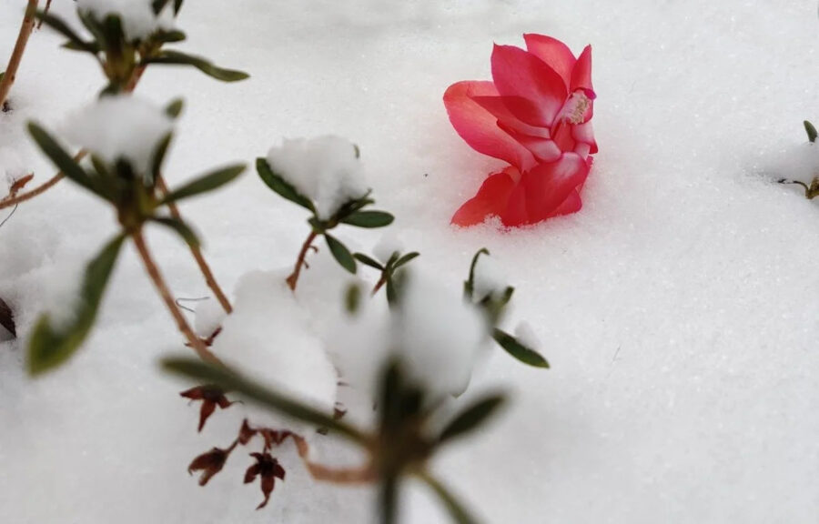

Winter Florals
Please join us on Friday, February 6th between 4:00 and 7:00 PM for the opening of our first exhibition for 2026, “Winter Florals.”
The show will explore the idea of “blooming in winter” literally, metaphorically, and emotionally. This exhibition brings together work that considers floral forms as natural beauty subject to vulnerability and transience, and as symbolic metaphors shaped by cultural and lived experience. Some works draw directly from flowers, botanical structures, and plant life. Others reflect on impermanence, social struggle, gender, and identity. Across both themes, we consider what it means to bloom in seasons that are not made for blooming.